Detección de Objetos: El Sentido de la Vista Profunda
Mientras el OCR le permite a un agente leer texto en imágenes, la detección de objetos le concede la capacidad de ver el mundo: identificar qué entidades existen, dónde están y qué son. Es la diferencia entre leer un cartel y reconocer que hay un automóvil acercándose.
En la terminología PEAS, este sensor transforma datos visuales crudos (píxeles) en perceptos estructurados: una lista de objetos con su clase, ubicación y nivel de confianza.
Clasificación vs. Detección
Es fundamental entender la diferencia entre estas dos tareas de visión artificial:
| Tarea | ¿Qué responde? | Ejemplo de Output |
|---|---|---|
Clasificación |
"¿Qué es esta imagen?" |
|
Detección |
"¿Qué objetos hay y dónde están?" |
|

Clasificación con Bumblebee y ResNet
Para clasificación de imágenes, Bumblebee ofrece soporte nativo con modelos como ResNet-50, entrenado en ImageNet (1000 categorías de objetos cotidianos).
Dependencias
defp deps do
[
{:bumblebee, "~> 0.6.0"},
{:nx, "~> 0.9.0"},
{:exla, "~> 0.9.0"},
{:stb_image, "~> 0.6.0"} # Para cargar imágenes
]
endImplementación
defmodule SensorVision do
@moduledoc """
Sensor visual para un agente. Usa ResNet (via Bumblebee)
para clasificar el contenido principal de una imagen.
"""
@doc """
Carga el modelo ResNet-50 y retorna un serving listo para clasificar.
"""
def cargar_clasificador(modelo \\ "microsoft/resnet-50") do
{:ok, resnet} = Bumblebee.load_model({:hf, modelo})
{:ok, featurizer} = Bumblebee.load_featurizer({:hf, modelo})
Bumblebee.Vision.image_classification(resnet, featurizer,
top_k: 5,
compile: [batch_size: 1],
defn_options: [compiler: EXLA]
)
end
@doc """
Clasifica una imagen desde su ruta en disco.
Retorna las top-k predicciones con su nivel de confianza.
## Ejemplo de output
[
%{label: "tabby cat", score: 0.92},
%{label: "tiger cat", score: 0.05},
%{label: "Egyptian cat", score: 0.02}
]
"""
def clasificar(serving, ruta_imagen) do
imagen = cargar_imagen(ruta_imagen)
resultado = Nx.Serving.run(serving, imagen)
resultado.predictions
|> Enum.map(fn pred ->
%{label: pred.label, score: Float.round(pred.score, 4)}
end)
end
@doc """
Clasifica múltiples imágenes en paralelo.
"""
def clasificar_lote(serving, rutas) do
rutas
|> Task.async_stream(fn ruta ->
{ruta, clasificar(serving, ruta)}
end, max_concurrency: System.schedulers_online())
|> Enum.map(fn {:ok, resultado} -> resultado end)
end
defp cargar_imagen(ruta) do
ruta
|> File.read!()
|> Nx.from_binary(:u8)
|> Nx.reshape({:auto, 3})
|> StbImage.decode!()
end
endUso
# 1. Cargar modelo (descarga automática la primera vez, ~100MB)
serving = SensorVision.cargar_clasificador()
# 2. Clasificar una imagen
predicciones = SensorVision.clasificar(serving, "foto_gato.jpg")
IO.inspect(predicciones)
# [%{label: "tabby cat", score: 0.9234}, ...]
# 3. Tomar decisiones basadas en la percepción visual
[%{label: clase_principal} | _] = predicciones
case clase_principal do
"traffic light" -> IO.puts("Agente: ¡Semáforo detectado! Evaluando color...")
"person" -> IO.puts("Agente: Persona detectada. Activando protocolo de seguridad.")
_ -> IO.puts("Agente: Objeto identificado como: #{clase_principal}")
endDetección con YOLO
Para detección de objetos (encontrar múltiples entidades con sus coordenadas), la comunidad Elixir cuenta con la librería yolo, que ejecuta modelos YOLO exportados al formato ONNX.
¿Qué es YOLO?
YOLO (You Only Look Once) es una familia de modelos de detección en tiempo real. A diferencia de ResNet que analiza la imagen completa para dar una sola etiqueta, YOLO divide la imagen en una cuadrícula y predice simultáneamente múltiples objetos con sus cajas delimitadoras (bounding boxes).
Dependencias
defp deps do
[
{:yolo, "~> 0.4.0"},
{:exla, "~> 0.9.0"},
{:stb_image, "~> 0.6.0"}
]
endImplementación
defmodule SensorDeteccion do
@moduledoc """
Sensor de detección de objetos. Usa YOLO para encontrar
y localizar múltiples entidades en una imagen.
"""
@doc """
Carga un modelo YOLO desde un archivo ONNX.
El modelo se exporta previamente desde Python/Ultralytics.
"""
def cargar_modelo(ruta_onnx) do
YOLO.load(ruta_onnx)
end
@doc """
Detecta todos los objetos en una imagen.
Retorna una lista de detecciones con clase, confianza y bounding box.
## Ejemplo de output
[
%{class: "person", confidence: 0.95, bbox: %{x: 100, y: 50, w: 200, h: 400}},
%{class: "car", confidence: 0.88, bbox: %{x: 300, y: 200, w: 150, h: 100}}
]
"""
def detectar(modelo, ruta_imagen) do
imagen = StbImage.read_file!(ruta_imagen)
YOLO.detect(modelo, imagen)
end
end|
Para usar YOLO, necesitas un modelo pre-entrenado en formato ONNX. Puedes exportar uno desde Python con: |
¿Cuándo usar cada Sensor Visual?
| Sensor | Tecnología | Mejor para | Ejemplo de Caso |
|---|---|---|---|
OCR |
Tesseract |
Leer texto en imágenes |
Escanear documentos, recibos, formularios |
Clasificación |
Bumblebee + ResNet |
Identificar el contenido principal |
"¿Es esta imagen un gato o un perro?" |
Detección |
YOLO |
Localizar múltiples objetos |
Contar personas en una sala, detectar vehículos |
|
Un agente sofisticado combinaría los tres sensores: usa detección para encontrar entidades en una escena, clasificación para entender cada una con más detalle, y OCR para leer cualquier texto que contengan. |